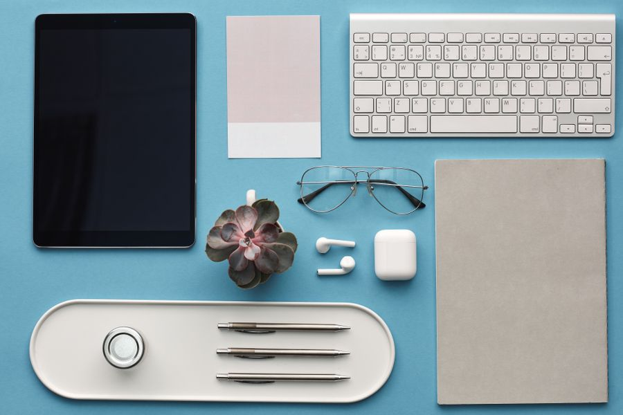

Los mejores en calidad-precio
El mejor Imagen orientativa
Imagen orientativaEl mejor para escribir muchas horas
Logitech MX Keys S
A favor
- Perfil bajo: se escribe rápido y suena poco
- Se conecta a tres equipos y cambia con un botón
- La retroiluminación se enciende sola al acercar la mano
En contra
- Caro para ser un teclado plano
- No sirve para juego competitivo
Si te pasas el día escribiendo, es el que menos te va a cansar. La combinación de perfil bajo y salto entre equipos no la tiene casi nadie.
Ver precio actual en Amazon
¿Te lo estás pensando? Añádelo al carrito en Amazon y decídelo con calma: te avisan si baja de precio y lo tienes a mano cuando te decidas.
No ponemos precios porque cambian cada día. Lo ves actualizado al entrar.
Ficha técnica completa de Logitech MX Keys S →
Gama mediaImagen orientativaGama media · escritorios pequeños
Logitech MX Keys Mini
A favor
- Sin teclado numérico: deja mucho sitio para el ratón
- Mismas teclas que el MX Keys S, en menos espacio
- Cabe en la funda del portátil
En contra
- Si metes números a diario, echarás de menos el bloque numérico
El mismo tacto en la mitad de mesa. Si trabajas fuera de casa o tienes el escritorio justo, es este.
Ver precio actual en Amazon
¿Te lo estás pensando? Añádelo al carrito en Amazon y decídelo con calma: te avisan si baja de precio y lo tienes a mano cuando te decidas.
No ponemos precios porque cambian cada día. Lo ves actualizado al entrar.
Ficha técnica completa de Logitech MX Keys Mini →
Gama mediaImagen orientativaGama media · si ya te duelen las muñecas
Logitech Ergo K860
A favor
- Teclado partido y curvado: las muñecas quedan en posición neutra
- Reposamuñecas acolchado incluido
- Inclinación regulable
En contra
- Cuesta unas dos semanas acostumbrarse
- Ocupa bastante mesa
No lo compres por curiosidad: cómpralo si ya tienes molestias. Entonces es de las mejores inversiones que puedes hacer.
Ver precio actual en Amazon
¿Te lo estás pensando? Añádelo al carrito en Amazon y decídelo con calma: te avisan si baja de precio y lo tienes a mano cuando te decidas.
No ponemos precios porque cambian cada día. Lo ves actualizado al entrar.
El mejor barato
Imagen orientativaEl mejor de los baratos
Logitech K380
A favor
- Se conecta a tres aparatos, incluido el móvil y la tablet
- Pilas que duran hasta dos años
- Muy barato y muy ligero
En contra
- Teclas redondas: cuesta un par de días acertar
- Sin retroiluminación
Por lo que cuesta, hace lo mismo que teclados de tres veces su precio en lo que de verdad usas. Para una segunda mesa o para la tablet, ideal.
Ver precio actual en Amazon
¿Te lo estás pensando? Añádelo al carrito en Amazon y decídelo con calma: te avisan si baja de precio y lo tienes a mano cuando te decidas.
No ponemos precios porque cambian cada día. Lo ves actualizado al entrar.
Ficha técnica completa de Logitech K380 →